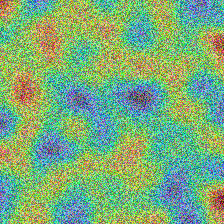

Patient Metadata
Patient ID: TEST_PAT_99
Eye Examined: OD
Examination Date: 2026-09-05 01:21
Image Quality: Adequate (93.9/100)
Diagnostic Staging
Moderate Non-Proliferative Diabetic Retinopathy (Moderate NPDR)AI Confidence: 77.0%
Urgency Window: Referral (3-6 mo)
Retinal Examination & Explainability Gallery
1. Original Fundus
2. Preprocessed ROI

3. Grad-CAM XAI Heatmap
4. Landmark & Lesions
Clinical Action & Specialist Referral
Referable Diabetic Retinopathy: Refer to an Ophthalmologist / Retina Specialist within 3 to 6 months for comprehensive dilated examination.